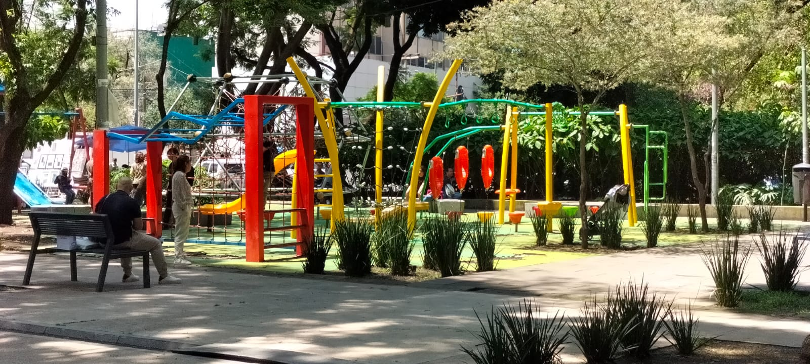
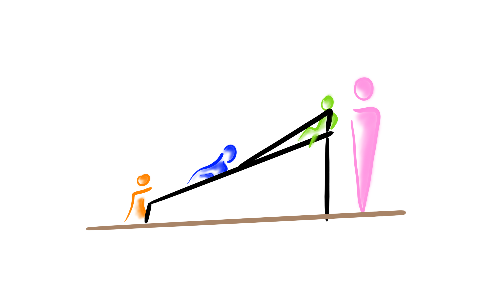
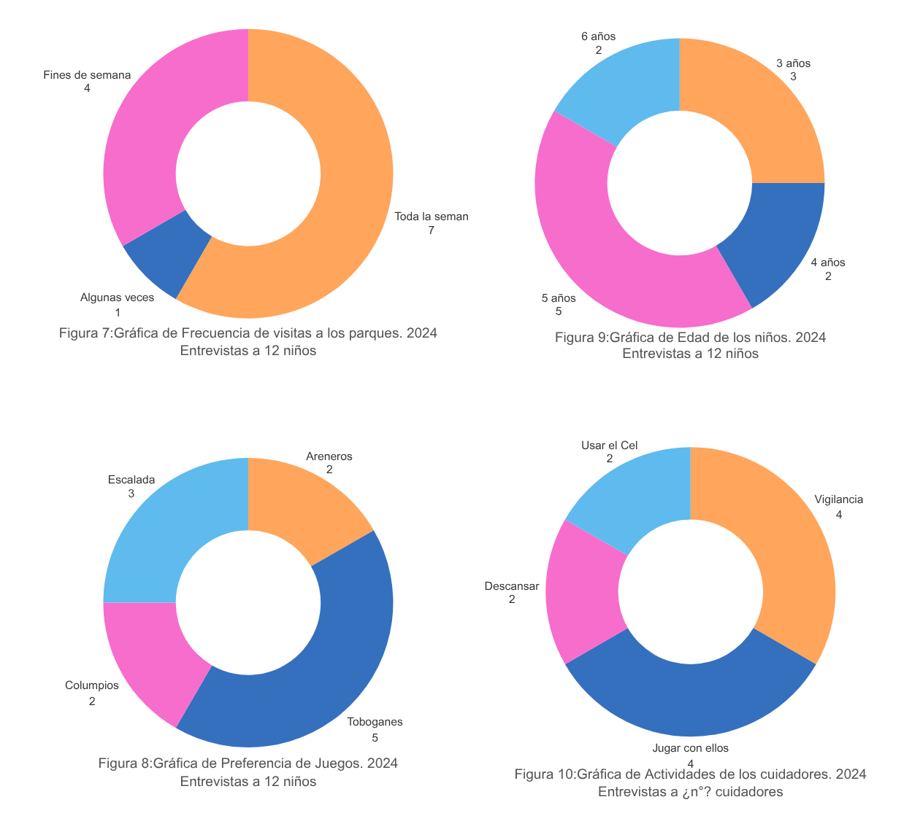

El Reto de los Parques

Documentamos la dinámica de juego en 3 parques de la Ciudad de México — Parque de los Venados, Parque Lineal Vicente Guerrero y Parque Sullivan — con un total de 12 entrevistas a niños y cuidadores. Lo que encontramos fue consistente: los juegos existentes imponen una sola forma de usarse. Los niños los ignoraban y creaban la suya — escalando por donde no debían, usando la estructura de formas no previstas, reinventando el juego constantemente.
Investigación Contextual
¿Cómo podríamos crear un espacio de juego libre que rete la psicomotricidad de los niños sin necesidad de instrucciones? Aplicamos la metodología AEIOU (Activities, Environments, Interactions, Objects, Users) para desglosar cada fricción del ecosistema.
Actividades
Comportamiento cíclico de validación motriz. Escalan por rutas atípicas buscando autonomía. Cuidadores oscilan entre vigilancia e intervención.
Entornos
Ecosistema condicionado térmicamente. El sol fuerza a los infantes a usar espacios residuales asoleados como refugios térmicos de planeación.
Interac.
Uso no normativo: suben laderas en reversa. Sociabilidad estratégica para rotaciones en equipos y acuerdos tácitos para evitar colisiones.
Objetos
Nodo principal que detona un patrón hiperactivo (subir, correr, deslizar, brincar) que el mobiliario actual no soporta fluidamente por falta de red.
Usuarios
Primarios: Infancias tempranas (3-5 años) buscando agenciar riesgo. Secundarios: Cuidadores (30-35 años) cuyo estrés delimita el radio.

Realizamos investigación de campo y entrevistas a profundidad para entender la delgada línea entre la seguridad infraestructural y la sobreprotección conductual sistémica. Notamos un patrón crítico: el diseño de los parques actuales está hecho para la tranquilidad del padre, y ese mismo diseño es el que inhibe la exploración motriz libre del niño.

La Forma que Sigue a la Función

A través de la iteración ergonómica y pruebas de concepto en colaboración con Fundación FEMSA, diseñamos CICLO. Un ente orgánico cuyo uso es deducible y adaptable al tamaño y coraje de cada infante.

El diseño de CICLO incorpora un pasamanos circular inclinado a 45° con travesaños a 25 cm de separación — una medida validada directamente con usuarios de entre 1 y 6 años durante el simulador funcional. Esta geometría permite escalar, colgarse y atravesar sin instrucciones, estimulando el desarrollo motor a través de un affordance natural que no requiere vigilancia invasiva.

El resultado es un sistema que no impone reglas, sino que sugiere posibilidades, devolviendo la agencia al niño en el espacio público urbano.
Impacto y Recepción

Aproximadamente 12 niños de entre 1 y 6 años probaron el simulador funcional durante las pruebas de campo. El insight más relevante no fue técnico — fue humano: los momentos de mayor tensión para los cuidadores ocurrían cuando perdían contacto visual con el niño o cuando el entorno no permitía una supervisión cómoda. CICLO responde directamente a esto: su altura máxima de 1.40 m y su forma circular garantizan visibilidad completa desde cualquier ángulo, sin eliminar el reto físico que el niño necesita.
Visión a Futuro
El proyecto busca estandarizarse como un mobiliario urbano modular que pueda integrarse en cualquier parque de México, devolviendo la autonomía a la primera infancia mediante el diseño sistémico.